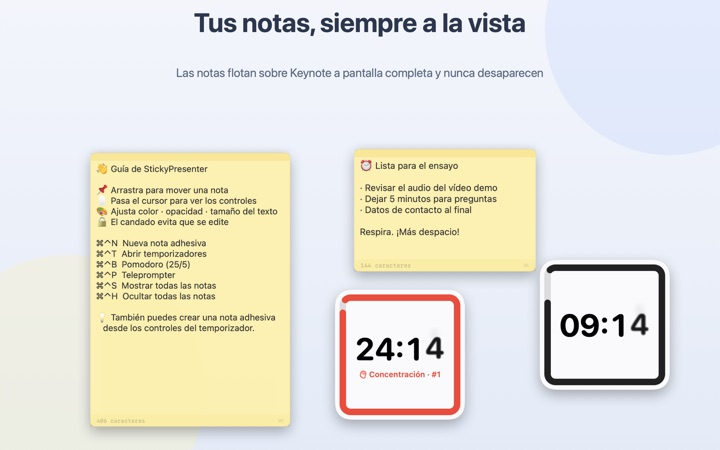
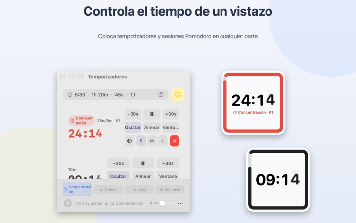
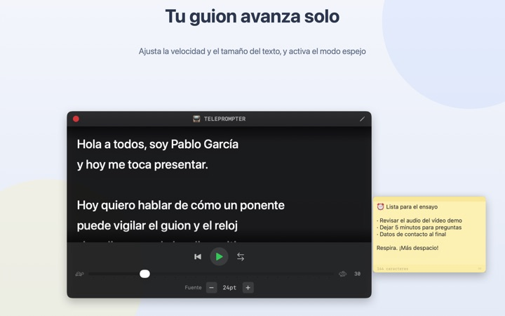
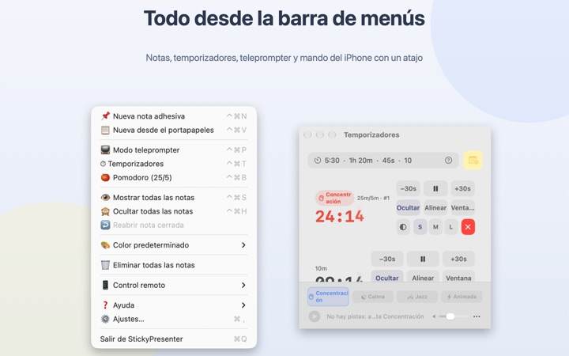

Tu guion y tu tiempo,
encima de la diapositiva
Pon Keynote a pantalla completa y tus notas adhesivas y el temporizador siguen ahí, encima. No le quitan el foco a la app de presentaciones, así que el mando sigue pasando diapositivas.
Todas las funciones son gratis. Requiere macOS 14 o posterior.

Pruébalo sobre una diapositiva
Escribe un tiempo como lo harías en la app. Pulsa 15s para ver cómo te avisa el widget cuando se acaba el tiempo.
¿Dónde pones el guion y el reloj mientras presentas?
La vista del presentador necesita otra pantalla, y mirar el reloj de pulsera es algo que el público siempre nota. Puede que alguna vez hayas pegado una nota de papel al portátil y se haya caído. StickyPresenter deja tu guion y el tiempo restante justo encima de la diapositiva, donde ya tienes la mirada.
Un vistazo y sabes cuánto queda
Un widget cuadrado en una esquina muestra el tiempo restante. Se pone rojo cuando se acerca el final y, al terminar, suena un aviso y el borde parpadea.
Escribe el tiempo como te salga, por ejemplo 5:30 o 1h 20m, o escribe 25/5 para un Pomodoro que alterna concentración y descanso. Abre el temporizador en su propia ventana para compartir solo esa ventana por pantalla compartida o AirPlay.

Lee tu guion mirando a cámara
El teleprompter desplaza el guion a la velocidad que elijas y se detiene solo al llegar al final. Copia el guion, pulsa ⌘⌃P y se abre con ese texto.
Tiene modo espejo para equipos de teleprompter con cristal reflectante, y la velocidad y el tamaño de letra se conservan para la próxima vez.

Sin salir de la diapositiva
Funciona discretamente desde la barra de menús, sin icono en el Dock ni ventanas que vigilar. Atajos como ⌘⌃N para una nota nueva o ⌘⌃T para los temporizadores responden incluso con Keynote a pantalla completa.
En el escenario, la app gratuita para iPhone Remote Controller for Sticky te deja iniciar y pausar el temporizador, y apartar el widget si tapa una diapositiva.

Tres pasos para empezar
- 1
Abre la app
Aparece un icono de nota en la barra de menús y, la primera vez, se abre una guía breve.
- 2
Pon una nota y un temporizador
Copia tu guion y pulsa
⌘⌃V; luego escribe la duración de tu charla en el campo del temporizador. - 3
Pasa a pantalla completa
La nota y el temporizador se quedan encima.
Atajos y formatos de tiempo
- ⌘⌃N
- Nueva nota adhesiva
- ⌘⌃V
- Nueva nota con lo que hay en el portapapeles
- ⌘⌃T
- Mostrar u ocultar temporizadores
- ⌘⌃B
- Empezar un Pomodoro (25 min de concentración, 5 de descanso)
- ⌘⌃P
- Teleprompter
- ⌘⌃S · ⌘⌃H
- Mostrar u ocultar todas las notas
- 10
- Un número solo son minutos (10 min)
- 5:30 · 1:15:00
- Minutos:segundos, horas:minutos:segundos
- 1h 20m · 45s
- Con unidades
- 25/5
- Concentración/descanso, en bucle hasta que lo pares
Todos los atajos combinan Comando (⌘) y Control (⌃) y funcionan aunque estés en otra app. Los temporizadores llegan hasta 99:59:59.
Todo es gratis
StickyPresenter (Mac)
- Notas adhesivas en seis colores, con opacidad, tamaño de letra y bloqueo de edición
- Cuenta atrás, Pomodoro y widget para el Centro de notificaciones
- Teleprompter con modo espejo
- Música de fondo que arranca con el temporizador
- Atajos que funcionan desde cualquier app
Remote Controller for Sticky (iPhone)
- Iniciar, pausar y sumar o restar 30 segundos
- Cambiar el tamaño y la posición del widget desde el escenario
- Temporizadores de 3, 5, 10 o 15 minutos con un toque
Es una app aparte y gratuita. Requiere iOS 17 o posterior y StickyPresenter abierto en un Mac de la misma red Wi‑Fi.
No hay nada bloqueado tras un pago. Si te resulta útil, puedes dejarle una propina al desarrollador desde Ajustes.
Preguntas frecuentes
¿Puedo mostrar solo el temporizador al compartir pantalla o duplicarla?
Sí. Con el botón Ventana de la fila del temporizador se abre como una ventana normal; así aparece en la lista de ventanas de la pantalla compartida y de AirPlay, y puedes compartir solo esa.
Oculté un widget y no lo encuentro.
En la ventana de temporizadores, pasa el puntero por la fila de ese temporizador y su posición se marca con una línea discontinua. Pulsa Alinear para traerlo junto a la ventana.
Cerré una nota sin querer.
Usa Reabrir nota cerrada en la barra de menús para recuperar cualquiera de las últimas 20. Las notas se guardan mientras escribes y vuelven al mismo sitio al reabrir la app.
Un atajo no funciona.
Si en la tabla de atajos de la guía aparece como En uso por otra app, es que otra app lo reservó antes. Cierra esa app y volverá a funcionar. No hace falta permiso de Accesibilidad.
¿Por qué el tema Camaleón pide permiso de Grabación de pantalla?
Camaleón lee el color de la pantalla que hay detrás del widget para adaptarse a él, y para eso necesita ese permiso. No se guarda ni se envía nada. Sin el permiso, los temas Sistema, Claro y Oscuro funcionan igual.
¿Cómo añado música de fondo?
Elige un ambiente (Concentración, Calma, Jazz o Animada) en la barra de música de la parte inferior de la ventana de temporizadores y la app creará una carpeta para cada uno. Mete ahí tus canciones y sonarán por orden junto con el temporizador. La app no trae música.
El mando del iPhone no encuentra mi Mac.
Revisa esto en orden: que StickyPresenter esté abierto en el Mac (busca el icono en la barra de menús); que los dos dispositivos estén en la misma Wi‑Fi, no en una red de invitados ni con datos móviles; que Red local esté permitida para la app en Privacidad y seguridad, tanto en el iPhone como en el Mac; y que la VPN esté desactivada.
El mando dice que el código de vinculación no es correcto.
Escribe el código de cuatro cifras que aparece ahora en Control remoto, en la barra de menús del Mac. Si pulsaste Nuevo código de vinculación, solo vale el nuevo. Después de vincularlo una vez, se conecta en cuanto abres la app.
¿Podría otra persona controlar mi temporizador?
No sin tu código. El Mac solo acepta mandos que hayan introducido el código correcto, mediante una conexión directa y cifrada dentro de tu red local. Si alguien ha visto el código, usa Nuevo código de vinculación u Olvidar controles remotos vinculados en Control remoto, en la barra de menús.
¿Dónde se guardan mis notas y guiones?
Solo en este Mac. No hay cuenta ni anuncios, y nada sale a internet salvo estadísticas de uso anónimas y los comentarios que decidas enviar.
¿Dudas, errores o ideas? Escribe a mizzking75@gmail.com.